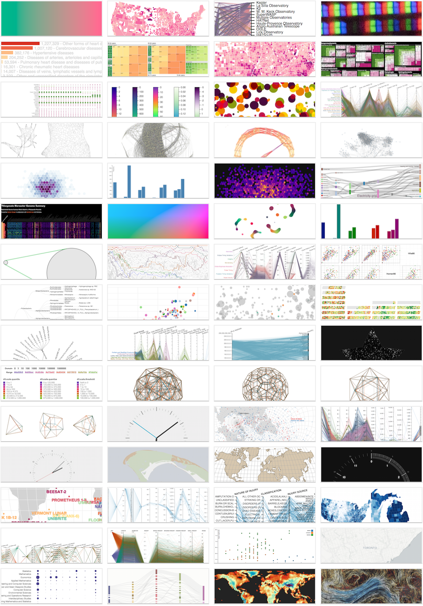

twitter.com/syntagmatic
github.com/syntagmatic
bl.ocks.org/syntagmatic

WHO Immunization Report · interview · blog post · github
Metagenomics Prototypes · slides
Ecoengine Explorer · blog post · github
The MtGox 500 · hn · wired
D3 and Canvas (OpenVisConf) · slides
Visualizing Multidimensional Data with D3.js (Berkeley Data Science) · notes
Visually Exploring Multidimensional Data (OpenVisConf) · slides
d3.geo slides